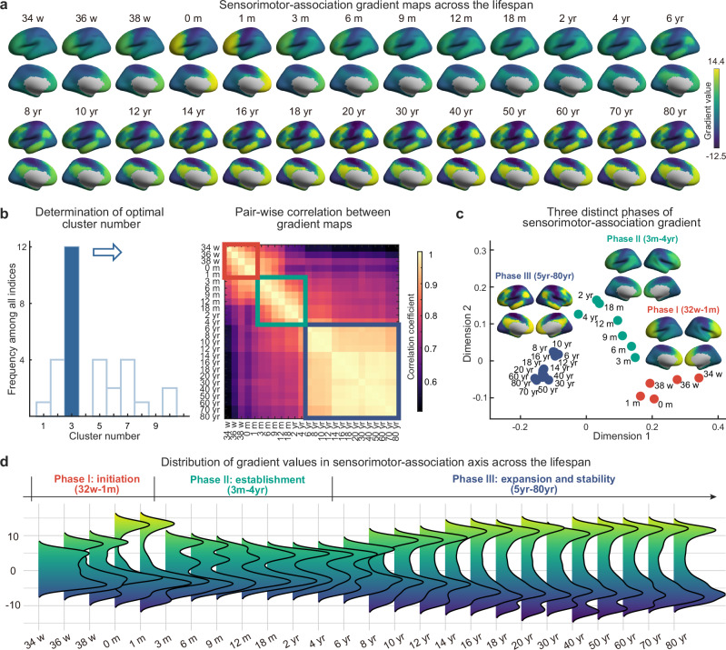

About the Lab
The Computational Connectome Lab (CClab) seeks to understand how the human brain is shaped by development and experience, and how these processes are altered in neurological disorders. Combining multimodal brain imaging, brain connectomics, and computational analysis, we study the organization of brain structure and function through the connections and coordination among brain regions, exploring how brain networks support cognition and behavior.
Our research focuses on human brain plasticity and abnormal reorganization in neurological disorders. We investigate how development, learning, and experience shape brain networks, examining how the brain adjusts its connections, integrates information, and adapts to its environment at different stages of life. We also study how neurological disorders alter brain network organization and dynamics, how these changes relate to cognitive impairment, and how adaptive compensation can be distinguished from dysfunction.
By linking brain imaging, network organization, and cognitive behavior, CClab aims to chart how the brain changes through typical development, experience-dependent plasticity, and disease-related reorganization, offering new perspectives on human adaptability, individual differences, and cognitive health.
Human cortical function is organized along a continuous axis extending from primary sensory regions to higher-order association cortex, forming the sensorimotor–association (S-A) hierarchy. This hierarchy provides a core organizational framework linking sensory processing to higher-order cognition and is closely related to development, aging, and the emergence and progression of neurological and psychiatric disorders. We used functional connectome gradient analysis to map high-dimensional connectivity data into a continuous low-dimensional space, enabling quantitative characterization of hierarchical functional organization. Integrating multicenter MRI data from 33,247 individuals across 132 research centers, we constructed a developmental atlas spanning approximately 32 gestational weeks to 80 years and systematically characterized lifespan changes in functional hierarchy.
We found that functional hierarchy does not assume an adult configuration at birth, but follows a continuous sequence of initiation, establishment, and expansion and stability. During the perinatal period, from approximately 32 gestational weeks to one month after birth, functional organization is primarily differentiated along an anterior–posterior axis. From infancy to early childhood, approximately three months to four years, the anterior–posterior gradient range narrows as the canonical S-A axis gradually emerges. Its spatial characteristics become clearly established in late childhood and adolescence, followed by relative stability over subsequent decades. Changes in functional hierarchy share spatial organizational patterns with network segregation and integration, cortical structural maturation, and cognitive development. Primary sensorimotor systems mature earlier, whereas higher-order association systems continue to strengthen cross-regional information integration with age, illustrating how complex cognition is supported by balancing specialization and integration. Multimodal imaging analyses further linked hierarchical changes to cortical thickness development and geometric cortical expansion, while showing only partial correspondence with microstructural changes indexed by T1w/T2w ratios. These findings suggest that multiple biological processes jointly shape the emergence and development of functional hierarchy.

The first 1,000 days of life represent a critical window for the development of brain networks supporting cognition. The dynamic organization of functional segregation and integration during this period provides a neural foundation for individual cognitive development. Although segregation and integration are recognized as central network principles of higher-order cognitive processing, their early developmental mechanisms remain insufficiently understood. Using a publicly available longitudinal multimodal dataset comprising 930 scans from 665 infants and young children, spanning 28 gestational weeks to three years of age, we combined complex network analysis with generalized additive mixed models to systematically characterize early functional connectome development.
Functional connectivity in primary sensorimotor, visual, and higher-order association cortex followed distinct developmental trajectories, with higher-order association regions gradually replacing primary cortex as core network hubs. At the global level, the clustering coefficient, a measure of functional segregation, followed an inverted-U-shaped trajectory, whereas global efficiency, a measure of functional integration, showed a U-shaped trajectory. Both exhibited spatially graded developmental patterns along the cortical anterior–posterior axis. Modular analyses further showed that sensorimotor and visual modules matured first, with within-system connectivity and modularity developing in parallel. Individualized prediction models based on support vector regression demonstrated that functional connectivity strength and segregation–integration measures at birth significantly predicted cognitive and language abilities at 1.5 years. Integration with BrainSpan developmental transcriptomic data linked these network patterns to gene expression associated with neurodevelopmental processes, including dendritic and synaptic development, neuronal differentiation and migration, axonal development, and myelination, as well as metabolic processes such as aerobic glycolysis and oxidative phosphorylation. These findings provide complementary perspectives on the molecular basis of functional network development.

Pattern separation is a core computational mechanism of episodic memory, enabling similar inputs to be stored as distinct representations through neural activity. Its integrity is essential for memory precision. Traditional accounts emphasize the hippocampal dentate gyrus (DG) as a discrete functional module with a dominant role in pattern separation. This view, however, has difficulty explaining continuous gradients observed during memory encoding, such as the progressive differentiation of contextual information, and distributed functional reorganization following hippocampal damage in conditions such as temporal lobe epilepsy.
Using low-dimensional mapping based on functional connectivity gradients, we found that activation during pattern separation varied along the hippocampal long axis and, to some extent, followed the primary-to-association cortical hierarchy. Moving beyond a view restricted to discrete hippocampal subfields, this continuous spatial representation revealed graded changes in hippocampal function along its long axis, providing a new perspective on human episodic memory. Applying the approach to patients with left temporal lobe epilepsy revealed weaker long-axis-related activation patterns in the left hippocampus and enhanced activation in the right hippocampus, identifying a network reorganization pattern consistent with contralateral functional compensation following hippocampal damage. Gradient-weighted indices successfully predicted individual pattern-separation scores, demonstrating that continuous representations in gradient space could predict behavioral performance across populations.